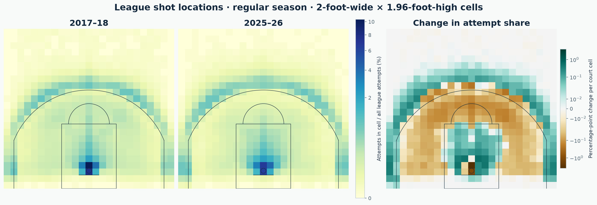

From shot selection to win probabilities
The project combines public play-by-play archives with team, player, schedule, and travel context to explore league-wide patterns. It examines how shot selection changed across nine seasons, then models win probabilities before tip-off, after three quarters, and as a game's events unfold.
Training and validation follow the calendar, and historical features use information available before each prediction. The study compares simpler statistical models with AutoML, Bayesian, and sequence-model alternatives, with saved forecasts available in an interactive historical game replay.
Built from the Celtics analysis
I used my original Boston Celtics Player Analysis as the starting point, expanding the study from one team to all 30 NBA teams. The new project revisits the original classifiers and develops a broader workflow for league-wide analysis and probability modeling.